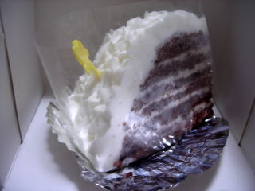
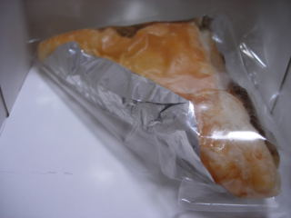

すのうはっとのすのうはっと
2010/09/06
すのうはっとはシンプルな味ですね。

久々に食べたくなって食べたんですが、変わらない味ですね。
果物やチョコとか、味の濃いものがないのでちょっと物足りないんですが、そこがこのケーキのいいところなんですよね。やさしい味でした。

これはアップルパイです。パイ大きめで、あっさりめの甘さでした。
島根県出雲市小山町359-3
閉店しました。
2010/09/06
すのうはっとはシンプルな味ですね。

久々に食べたくなって食べたんですが、変わらない味ですね。
果物やチョコとか、味の濃いものがないのでちょっと物足りないんですが、そこがこのケーキのいいところなんですよね。やさしい味でした。

これはアップルパイです。パイ大きめで、あっさりめの甘さでした。
2006/3/25
すのうはっとのケーキ「スノウハット」と「メルヘン」を食べました。個人的にはこのお店の定番なケーキです。
見た目は全然違いますが、両方とも中身は似た感じのケーキです。スノーハットは普通に生クリームで、メルヘンの方はクリームがミント味になってます。
ほぼスポンジとクリームの組み合わせだけのケーキなので、シンプルな味わいが楽しめます。
両方とも軽くてキメの細かいスポンジと、生クリームの相性がとっても良く、クリームが多いので、しっとり甘い食感がとても美味しく感じました。
個性的な味ではないので地味ですが、普通にしっかり美味しいケーキでした。